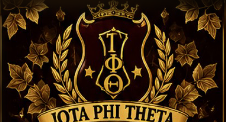

On September 19, 1963 - right in the middle of the Civil Rights Movement, just weeks after the March on Washington - twelve students at Morgan State College in Baltimore started something brand new. Iota Phi Theta became the youngest fraternity in the Divine Nine, and its motto tells you how the founders thought: “Building a Tradition, Not Resting Upon One!” These biographies are our kid-sized fan tribute to the twelve builders.
A steady leader among the twelve, Albert helped lay Iota's very first bricks at Morgan State. Every new thing needs somebody calm who keeps everyone believing - that was him.
One of the original builders, Lonnie helped shape the brotherhood's founding ideals - the beliefs about manhood, scholarship and service that Iotas still live by today.
Charles carried Iota's message of building beyond Morgan State to new campuses. A tradition only grows if somebody is brave enough to carry it somewhere new.
Frank was one of the twelve who turned a civil-rights-era idea into a living brotherhood. Believing in something that does not exist yet - and then building it - is the bravest thing there is.
A builder of the first hour, John is remembered for his dedication to the young fraternity. When Iota was brand new and could easily have folded, dedication like his kept it standing.
Barron was one of the twelve men who signed on to build a brand new tradition. In 1963, starting a new fraternity meant choosing to make your own lane - and he chose it.
A gifted musician, Webster brought creativity to Iota's foundation. He went on to make real music in the world - proof that the twelve were artists and thinkers, not just organizers.
One of the original twelve builders of the brown and gold. Every tradition needs men willing to be first - first meeting, first officers, first everything. Charles was one of them.
Louis's steady hand helped Iota stand up in its first years. New things wobble before they walk - the builders kept this one balanced until it could run.
One of the twelve, Charles helped write Iota's first chapter in history - literally. Somebody has to set down how the brotherhood works, and the founders wrote it together.
Elias is remembered for his belief in Iota's future - not just what the fraternity was in 1963, but what it could become. Today, that future is exactly what happened.
The twelfth name on the list, and every list needs all twelve. Michael helped finish the founding circle - because a tradition is only as strong as the last brick laid.
Twelve young men looked at eight older organizations and said: we will build our own - and they did, during one of the hardest times in American history. That is the lesson: you are never too young or too new to start something real. This page is a fan-made tribute with love from the D9Legacy universe - for the official record, visit the real fraternity at iotaphitheta.org.